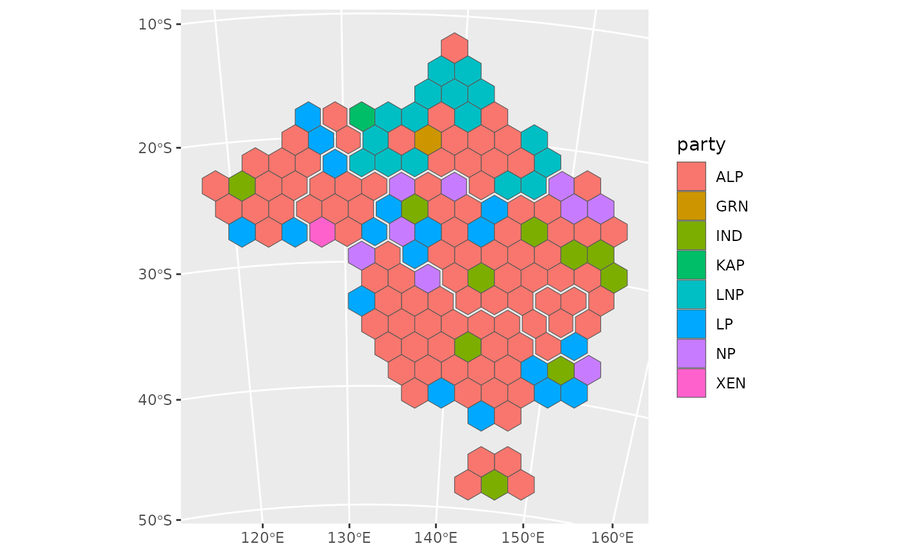
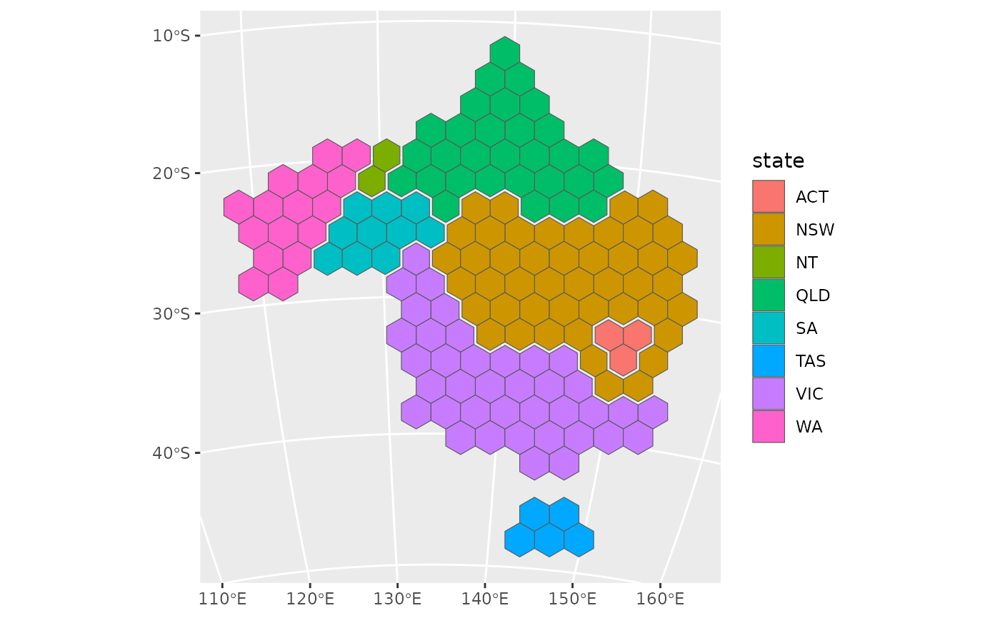

Replaces each region of a map with a hexagon of equal size. The hexagons tile the outline of the map, and each region is allocated the hexagon that minimises the total squared displacement of all regions.
Usage
hexmap(
object,
group = NULL,
group_layout = layout_hierarchy(),
island_gap = 0.5,
group_gap = 0.1,
crs = NULL
)Arguments
- object
An sf object, or a geometry column (sfc), of regions in a projected or longitude/latitude coordinate reference system.
- group
Optionally, the group of each region (e.g. states), as a column of
objectgiven unquoted (group = state) or as a string (group = "state"), or as a vector with one value for each region.- group_layout
How groups are arranged, as a layout function such as
layout_hierarchy()(the default),layout_diffusion(),layout_compact()orlayout_slice(), optionally wrapped inlayout_repair()to fix which groups touch. Only used withgroup.- island_gap
The distance, in hexagon widths, beyond which landmasses are tiled as separate islands. Use
Infto tile all land together.- group_gap
The width of the gap between groups, as a fraction of the hexagon width. The hexagons along group borders are trimmed to make this gap, so they are slightly smaller than other hexagons. Only used with
group.- crs
The projected coordinate reference system to make the hexagons in, such as the one the map will be plotted in.
objectis transformed tocrswithsf::st_transform(). Defaults to the CRS ofobject, or for longitude/latitude input, to a Lambert azimuthal equal-area CRS centred on the data ("+proj=laea +lat_0=... +lon_0=...").
Value
For an sf object, object with its geometry replaced by hexagons, keeping
all of its other columns and the order of its rows, so the hexagons can be
joined to or compared with the original regions. For a geometry column, a
geometry column of hexagons in the same order, so hexmap() can be used
within dplyr::mutate() to add the hexagons as another geometry column.
The hexagons are in the coordinate reference system they were made in.
Details
Landmasses that are further apart than island_gap hexagon widths are
tiled separately, with one hexagon for each region on that landmass. Their
hexagons are separated by at least one empty hexagon, so islands such as
Tasmania remain distinct from the mainland.
When group is given, the hexagons of each group (e.g. state) are kept
contiguous and a gap of group_gap hexagon widths is cut along the borders
between groups, so that each group is visually distinct. Groups usually
need a very different area of hexagons than they cover on the map, so the
map is distorted to fit them, as chosen by group_layout. By default, the
groups are laid out first, keeping each group's shape and touching the
groups it borders on the map, and the regions are then placed within each
group. See layouts for the available layouts, and
vignette("layouts") for how they compare. Grouping works best for groups
that are spatially contiguous, such as states.
The hexagons are regular and equally sized in the coordinate reference
system (CRS) they are made in, which is the CRS of object unless crs is
given, or a Lambert azimuthal equal-area CRS centred on the data for
longitude/latitude input. The hexagons keep their location when plotted in
another projection, but are stretched by it, so make the hexagons in the
CRS you will plot in. Use an equal-area CRS for hexagons that also cover
equal areas on the ground. See vignette("projections") for details.
See also
hex_grid() and hex_allocate(), which make an ungrouped hexagon
map in two steps: hexmap(x) is the same as
hex_allocate(x, hex_grid(x)).
Examples
library(sf)
# The 2025 Australian federal election, in the Australian Albers projection
election <- st_transform(aus_election_2025, 3577)
# A hexagon for each electoral division
election_hex <- hexmap(election)
# Every column of the map is kept, in the same order
head(election_hex)
#> Simple feature collection with 6 features and 3 fields
#> Geometry type: POLYGON
#> Dimension: XY
#> Bounding box: xmin: -1118770 ymin: -3831910 xmax: 1677985 ymax: -2287407
#> Projected CRS: GDA94 / Australian Albers
#> # A tibble: 6 × 4
#> division state party geometry
#> <chr> <chr> <chr> <POLYGON [m]>
#> 1 Adelaide SA ALP ((-875573.9 -2568225, -997171.9 -2498021, -997171.9 -235…
#> 2 Aston VIC ALP ((340406.7 -3410682, 218808.6 -3340477, 218808.6 -320006…
#> 3 Ballarat VIC ALP ((-997171.9 -3200068, -1118770 -3129863, -1118770 -29894…
#> 4 Banks NSW ALP ((1313191 -3831910, 1191593 -3761705, 1191593 -3621296, …
#> 5 Barker SA LP ((-753975.8 -2778840, -875573.9 -2708635, -875573.9 -256…
#> 6 Barton NSW ALP ((1556387 -3831910, 1434789 -3761705, 1434789 -3621296, …
# \donttest{
# Keep the divisions of each state together (takes a few seconds)
election_hex <- hexmap(election, group = state)
# }
library(ggplot2)
ggplot(election_hex) +
geom_sf(aes(fill = party))

# \donttest{
# Hexagons made for a globe centred on Australia
globe <- "+proj=ortho +lat_0=-25 +lon_0=134"
ggplot(hexmap(election, group = state, crs = globe)) +
geom_sf(aes(fill = state)) +
coord_sf(crs = globe)

# }
# \donttest{
# Add the hexagons as a second geometry column, alongside the regions
election <- dplyr::mutate(election, hex = hexmap(geometry, group = state))
# }